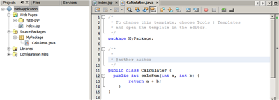
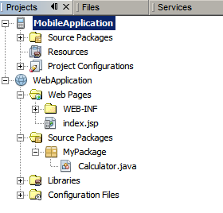
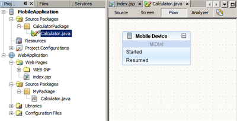
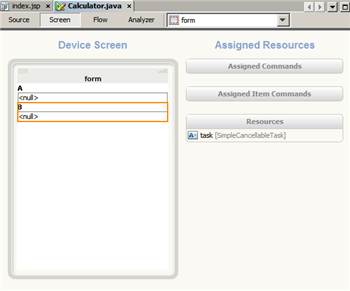
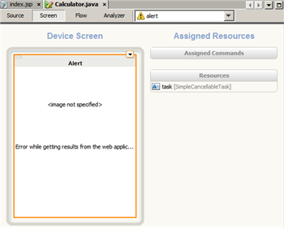
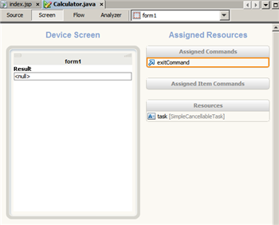
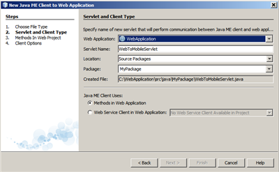
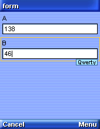

Мастер связи мобильных клиентов с веб-приложениями: создание приложения клиент-сервер
Среда IDE NetBeans позволяет создавать клиентские мидлеты, подключающиеся к веб-службам через веб-приложение промежуточного слоя.
В данном руководстве показывается, как использовать мастер связи мобильных клиентов с веб-приложениями для создания подключения к веб-службам с мобильного устройства, не поддерживающего спецификацию JSR-172 для платформы Java ME. Данный мастер создает сервлет для расчета двух чисел, передаваемых веб-приложению, в которое входит клиент веб-службы, содержащий метод сложения переданных чисел.
Если вы ранее не разрабатывали мобильные приложения в среде NetBeans или не знакомы с J2EE, начните с изучения Краткого руководства пользователя по NetBeans Java ME MIDP.
Содержание

Для работы с этим учебным курсом требуются перечисленные ниже программное обеспечение и материалы.
Создание веб-проекта
Перед использованием мастера связи мобильных клиентов с веб-приложениями необходимо создать веб-проект, в составе которого имеется клиент веб-службы.
Давайте
создадим новый проект веб-приложения для нашего сервлета Java с нуля. Для создания веб-приложения Java в среды IDE выполните следующие действия:
- Настройте проект веб-приложения.
- Добавьте бизнес-логику.
- Скомпилируйте проект.
Настройка проекта веб-приложения
- Выберите File ("Файл") > New Project ("Создать проект") (Ctrl-Shift-N). В области "Категории" выберите "Java Web". В области "Проекты" выберите "Веб-приложение" и нажмите кнопку "Далее".
- Введите
WebApplication в поле Project Name ("Имя проекта"). В поле "Project Location" укажите любой каталог на компьютере. В рамках данного руководства мы назовем этот каталог NetBeansProjects.
- Установите флажок "Использовать отдельную папку для хранения библиотек" и укажите местоположение папки библиотек (необязательно).
- Снимите флажок Set as Main Project ("Установить как главный проект") и нажмите кнопку Next ("Далее").
- На панели Server and Settings ("Сервер и настройки") оставьте GlassFish Server 3.1 сервером, на котором позже будет развернуто ваше мобильное приложение, и оставьте J2EE 1.4 версией, которую следует использовать с приложением.
- Оставьте выбранным параметр Set Source Level to 1.4 ("Установить уровень источника на 1.4").
Примечание. Путь контекста (т. е. на сервере) становится /WebApplication, основываясь на имени, данном проекту в предыдущем действии.
- Нажмите кнопку Next ("Далее"). На экране "Frameworks" нажмите кнопку "Finish" для создания проекта.
Среда IDE создаст папку проекта NetBeansProjects/WebApplication. Папка проекта содержит все исходные файлы и метаданные проекта, например сценарий сборки Ant. Проект WebApplication откроется в среде IDE. В главном окне редактора исходного кода будет представлена страница приветствия index.jsp.

Добавление бизнес-логики
Чтобы создать внутри веб-проекта класс Java с общедоступным методом, который будет представлять бизнес-логику приложения, выполните следующие действия:
- В окне Projects ("Проекты") щелкните правой кнопкой мыши узел Source Packages ("Пакеты исходного кода") и выберите New ("Создать") > Java Package ("Пакет Java"). Введите MyPackage в текстовое окно Package Name ("Имя пакета") и нажмите кнопку Finish ("Готово").
- Щелкните правой кнопкой мыши узел MyPackage и выберите New ("Создать") > Java Class ("Класс Java"). Введите Calculator в текстовое окно Class Name ("Имя класса") и нажмите кнопку Finish ("Готово").
- Вставьте следующий метод в файл Calculator.java, который откроется в окне редактора исходного кода:
public int calcSum(int a, int b) {
return a + b;
}
- Нажмите Ctrl + S для сохранения своих изменений.
Сборка проекта
В окне Projects ("Проекты") щелкните правой кнопкой мыши узел проекта WebApplication и выберите Build ("Сборка") (F11).
Веб-приложение для суммирования чисел готово.
Примечание. По умолчанию в проекте включена функция Compile on Save ("Компиляция при сохранении"), так что нет необходимости сперва компилировать код.

Создание мобильного проекта
Среда IDE позволяет создать клиентский мидлет, подключающийся к только что созданному веб-приложению, отправляющий ему два числа и отображающий их сумму.
Для создания клиентского приложения Java МЕ выполните следующие действия:
- Создайте проект
- Добавьте пакет и визуальный мидлет к проекту
- Добавьте компоненты к проекту
- Добавьте команды к проекту
- Соедините компоненты для создания потока операций приложения
- Мастер связи клиентов Java МЕ с веб-приложениями
Создание проекта
В среде IDE NetBeans предусмотрен мастер, который позволяет быстро создать проект MIDP.
- Выберите File ("Файл") > New Project ("Создать проект") (Ctrl-Shift-N). В разделе "Категории" выберите "Java ME". В разделе "Проекты" выберите "Приложение Mobile" и нажмите кнопку "Далее".
- Введите MobileApplication в поле Project Name ("Имя проекта"). В поле "Project Location" укажите локальный каталог. Для целей этого руководства мы укажем каталог NetBeansProjects.
- Снимите установленный по умолчанию флажок Create Hello MIDlet ("Создать мидлет приветствия"). Нажмите кнопку Next ("Далее").
- Оставьте Java(TM) Platform Micro Edition SDK 3.0 выбранной платформой эмулятора. Нажмите кнопку Next ("Далее"), затем Finish ("Готово").
Среда IDE создаст папку проекта NetBeansProjects/MobileApplication.
Папка проекта содержит все исходные файлы и метаданные проекта, например, сценарий Ant для этого проекта.

Добавление пакета и визуального мидлета к проекту
- Выберите проект
MobileApplication в окне проектов и выберите File ("Файл") > New File (Ctrl-N) ("Создать файл"). В разделе "Categories" выберите "MIDP". В разделе "File Types" выберите "Visual MIDlet". Нажмите кнопку Next ("Далее").
- Введите
Calculator в поля MIDlet Name ("Имя мидлета") и MIDP Class Name ("Имя класса мидлета"), а также введите CalculatorPackage в текстовое поле Package ("Пакет"). Нажмите кнопку Finish ("Готово").
Приложение отобразится в окне Flow Design ("Структура потока операций") Visual Mobile Designer.

Добавление компонентов к проекту
- В представлении Flow ("Последовательность действий") перетащите следующие компоненты из раздела Displayables ("Отображаемые") в Palette ("Палитра"):
- Экран ожидания
- Form (x2)
- Alert.

- Щелкните Screen ("Экран"), чтобы переключиться на представление экрана и выберите form в раскрывающемся списке справа от кнопки Analyzer ("Анализатор").
- Щелкните правой кнопкой мыши компонент form и выберите New/Add ("Создать/Добавить") > Text Field ("Текстовое поле") из всплывающего меню.
- Повторите действие 3 для добавления к форме нового текстового поля.
- Выберите компонент textField и введите A как значение Label ("Подпись") в окне Properties ("Свойства") (под палитрой).
- Щелкните правой кнопкой мыши компонент A и выберите Rename ("Переименовать") из всплывающего меню.
- В диалоговом окне Rename введите fieldA в поле New Name ("Новое имя") и нажмите кнопку "ОК".
- Выберите компонент textField1 и введите B как значение Label ("Подпись") в окне Properties ("Свойства").
- Щелкните правой кнопкой мыши компонент B и выберите Rename ("Переименовать") из всплывающего меню.
- В диалоговом окне Rename введите fieldВ в поле New Name ("Новое имя") и нажмите кнопку "ОК".
Переименованные поля будут представлять аргументы метода calcSum.

- Выберите form1 в раскрывающемся списке справа от кнопки Analyzer ("Анализатор").
- Щелкните правой кнопкой мыши компонент form1 и выберите New/Add ("Создать/Добавить") > Text Field ("Текстовое поле") из всплывающего меню.
- Выберите компонент textField и введите Result как значение Label ("Подпись") в окне Properties ("Свойства").
- Щелкните правой кнопкой мыши компонент Result и выберите Rename ("Переименовать") из всплывающего меню.
- В диалоговом окне Rename введите resultField в поле New Name ("Новое имя") и нажмите кнопку "ОК".
В этом переименованном поле будут отображаться результаты, выдаваемые методом calcSum.
поле результатов
- Выберите alert в раскрывающемся списке справа от кнопки Analyzer ("Анализатор").
- В окне Properties ("Свойства") смените свойство Title ("Заголовок") на Alert ("Предупреждение"), а свойство String ("Строка") на Error while getting results from the web application ("Ошибка при получении результатов от веб-приложения").
Это предупреждение будет отображаться в случаях, когда веб-приложение не возвратит никаких результатов.

Добавление команд к проекту
- В представлении Screen ("Экран") выберите form1, щелкните правой кнопкой мыши Device Screen ("Экран устройств") и выберите New/Add ("Создать/Добавить") > Exit Command ("Команда "Выход"") из всплывающего меню.

- В представлении Screen ("Экран") выберите form из раскрывающегося списка справа от кнопки Analyzer ("Анализатор").
- Щелкните правой кнопкой мыши Device Screen ("Экран устройств") и выберите New/Add ("Создать/Добавить") > Ok Command ("Команда "ОК"") из всплывающего меню.
- Повторите действие 4 для добавления Cancel Command ("Команда "Отмена"") из всплывающего меню.

- Нажмите Ctrl + S для сохранения своих изменений.
Соединение компонентов для создания потока операций приложения
В представлении Flow ("Поток операций"), щелкните Started ("Запущено") на Mobile Device ("Мобильное устройство") и перетащите его в компонент form. Аналогичным образом соедините другие компоненты, как показано на следующем рисунке.

Мастер связи клиентов Java МЕ с веб-приложениями
Давайте используем мастер связи клиентов Java МЕ с веб-приложениями для создания мобильного клиента внутри мобильного проекта с выбором метода calcSum.
- Разверните MobileApplication, щелкните правой кнопкой мыши Source Packages ("Пакеты исходного кода") и выберите New ("Создать") > Java ME Client to Web Application ("Связь клиента Java МЕ с веб-приложением").
- На панели Servlet and Client Type ("Сервлет и тип клиента") выберите тип веб-приложения, с которым будет взаимодействовать мидлет: введите WebToMobileServlet в поле Servlet Name ("Имя сервлета"), убедитесь, что выбран параметр Methods in Web Application ("Методы в веб-приложении"), что необходимо поскольку мобильный клиент будет подключаться напрямую к веб-приложению и нажмите кнопку Next ("Далее").

- На панели Methods in Web Project ("Методы в веб-проекте"), щелкните int calcSum (int a, int b) и нажмите кнопку Next ("Далее").
- На панели Client Options ("Параметры клиента") оставьте имя и пакет для созданного класса клиента в существующем виде, убедитесь, что выбраны параметры Generate stubs ("Создавать заглушки") и Allow floating point ("Разрешить плавающую точку") и нажмите кнопку Finish ("Готово").
В проекте Java ME будут созданы клиент Java ME и файлы сопоставления.
В веб-проекте будут созданы сервлет и поддерживающие классы.

Добавление исходного кода к клиенту Java МЕ
- Щелкните вкладку Calculator.java.
- В представлении Screen ("Экран") выберите waitScreen из раскрывающегося списка справа от кнопки Analyzer ("Анализатор").
- Щелкните правой кнопкой мыши task [SimpleCancellableTask] под Resources ("Ресурсы") и выберите Go to Source ("Перейти к исходному коду") во всплывающем меню.
- В редакторе исходного кода найдите раздел // write task-execution user code here и замените его следующим кодом:
WebToMobileClient wc = new WebToMobileClient();
int a = Integer.valueOf(getFieldA().getString()).intValue();
int b = Integer.valueOf(getFieldB().getString()).intValue();
int result = wc.calcSum(a, b);
System.out.println(result);
getResultField().setString(String.valueOf(result));
- Нажмите Ctrl + S для сохранения своих изменений.
Развертывание веб-проекта
Чтобы развернуть веб-приложение, в окне Projects ("Проекты") щелкните правой кнопкой мыши узел WebApplication и выберите Deploy ("Развернуть") из всплывающего меню.
В окне вывода отобразится следующее:

В начало
Запуск клиентского проекта
Для запуска мобильного клиентского приложения выберите Run ("Запустить") > Run Main Project ("Запустить главный проект") или нажмите F6 для запуска главного проекта.
Примечание. Перед запуском клиентского приложения убедитесь, что серверное приложение развернуто и работает.
После запуска MobileApplication откроется окно эмулятора, отображающее это мобильное приложение, которое работает в эмуляторе устройства по умолчанию.

Проверка функциональных возможностей
- В окне Emulator ("Эмулятор") введите любое число в поле A, переключитесь на поле B, нажав стрелку вниз на центральной кнопке, и введите новое число в поле B.

- Нажмите кнопку под Menu ("Меню"), затем нажмите кнопку "ОК" во всплывающем меню и нажмите центральную кнопку на Emulator для подтверждения.
После расчета WebApplication суммы введенных чисел, отобразится form1 с результатом.

Примечание. Чтобы увидеть итоги этого учебного курса, загрузите MobileCientToWebApplicationSample.zip.
В начало
Дополнительные сведения
В начало


{kind=link}
{kind=link}
{kind=link}
{kind=link}
{kind=link}
{kind=link}